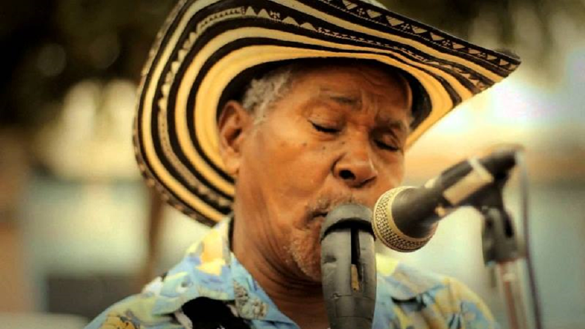

Paíto and the Colombian gaita negra
Note 040
Home > Blog A Musician's Log > Note 040
A gaitero from Flamenco
Sixto Silgado Martínez, better known as Paíto, was born on April 5, 1939, in Flamenco, a small settlement in the municipality of María la Baja, in the Colombian department of Bolívar. His musical education began within his family. His father, Román Silgado, was a gaitero, a gaita player, who introduced him to the instrument and initially encouraged him to play the gaita macho. Paíto eventually specialized in its melodic counterpart, the gaita hembra.
In the late 1960s, he settled in Isla Grande, in the Rosario archipelago off the Caribbean coast. There, musical activity coexisted with agricultural work and the traditional craft of roofing houses with palm leaves.
His collaboration with the percussionist Encarnación Tovar, known as El Diablo (1933–2000), led to the formation of Los Gaiteros de Punta Brava in 1969. Their appearance at a gaita festival in Cartagena in 1990 brought their music to wider attention and influenced a younger generation of Colombian musicians.
Paíto belongs to a particular current within Caribbean Colombian music: the tradition commonly known as gaita negra of "black gaita."
The instrument and its possibilities
The Colombian long gaita is a duct flute whose body is traditionally constructed from the dried stem of a cactus, usually referred to as cardón. A head made from beeswax and powdered charcoal holds a feather quill through which the performer directs air toward the sounding edge.
Contemporary makers also employ industrial materials, including PVC tubing. These substitutions illustrate the adaptability of the instrument's construction without necessarily altering its fundamental sound-producing mechanism.
The long gaitas are usually played in pairs. The gaita hembra ("female") has five finger holes, although performers generally use four at a time. The gaita macho ("male"), with one or two holes, provides a complementary melodic and rhythmic line. Its player normally holds a large maraca, or maracón, in the other hand.
The two flutes interact with drums, principally the alegre and the llamador, and, in some ensemble configurations, the tambora.
Despite its relatively small number of finger holes, the hembra offers considerable expressive possibilities. Breath pressure, fingering, articulation and changes of register allow performers to develop distinctive approaches to melodic construction. Differences between individual instruments, particularly in tuning and response, further contribute to the diversity of performance practices.
Gaita negra
The music of the long gaitas encompasses several regional and stylistic traditions. The distinctions between them involve considerably more than differences in repertoire.
The style identified as gaita negra is particularly associated with Afro-Colombian communities inhabiting the lower and western areas of the Montes de María and adjacent coastal territories. Its historical representatives include musicians such as Medardo Padilla, Jesús María Sayas and Paíto himself.
Federico Ochoa Escobar, in his detailed study of the long gaitas (2013), distinguishes this style from other performance traditions through features that affect melodic movement, ornamentation, rhythmic articulation and register.
Relatively rapid melodic passages, restrained use of vibrato and exploration of the upper register are among the characteristics associated with the style. Equally important is the relationship between the melodic instrument and the percussion, particularly the rhythmic exchanges between the hembra and the tambor alegre.
The distinction is stylistic rather than strictly organological. Similar instruments can produce substantially different musical results according to the techniques, rhythmic conventions and aesthetic preferences of their performers.
From inherited melodies to new repertoire
One of the most interesting aspects of Paíto's work is the breadth of his musical vocabulary. His repertoire extends beyond the pieces conventionally associated with the long gaitas. It incorporates material drawn from vallenato, porro, bullerengue and other Caribbean musical languages.
Pieces such as La Avianca, associated with the vallenato merengue, and El porro pelayero, derived from the Colombian wind-band tradition, illustrate this capacity to bring different musical materials into the gaita ensemble.
Such adaptations require considerable musical work. A melody originally conceived for accordion or wind instruments must be accommodated within the available pitches, registers and articulation techniques of the gaita. Its accompaniment must likewise be reorganized around the relationship between the two flutes, the maraca and the drums.
The process involves decisions about which melodic features to retain, which rhythmic figures to modify and how to accommodate passages that cannot be reproduced directly on the instrument. Paíto's repertoire thus offers an opportunity to examine arrangement and recomposition as creative activities within orally transmitted musical traditions.
The recorded musician
For much of his life, Paíto's musical activity took place outside the commercial recording industry. His work became more widely available through collaborations with younger musicians, researchers and independent cultural organizations, particularly Sonidos Enraizados. Two important releases, Gaita negra (2006) and La flor del melón (2009), document different aspects of his repertoire and performance style.
The latter brings together pieces associated with the gaita tradition and adaptations of other Caribbean genres. It provides a particularly valuable introduction to Paíto's musical interests beyond the conventional boundaries of the instrument.
These recordings also make it possible to recognize the contribution of a musician whose work might otherwise have remained largely confined to regional performance circuits.
Their value is enhanced by ethnomusicological research, interviews and musical transcriptions that document not only the resulting sound but also aspects of the knowledge and relationships underlying its production.
Individuality within tradition
The transmission of music through oral and practical learning is sometimes understood as a process in which successive generations reproduce an inherited repertoire, with individual differences confined to minor variations in performance.
Paíto's musical trajectory suggests a more complex relationship between inheritance and creativity. His playing developed through family instruction, sustained collaboration with other musicians, participation in regional musical life and contact with repertoires associated with other instruments and ensembles. Each of these experiences contributed to the formation of his particular musical language.
His individuality is audible in the way he organizes melodic phrases, negotiates the registers of the instrument, interacts with percussionists and incorporates unfamiliar musical materials into an established instrumental format.
Understanding the work of musicians such as Paíto therefore requires attention to two interconnected histories: the history of a collective musical tradition and the history of an individual who has spent decades exploring its possibilities.
Neither can be fully understood without the other.
Readings
- Ochoa Escobar, Federico. El libro de las gaitas largas: Tradición de los Montes de María. Bogotá: Editorial Pontificia Universidad Javeriana, 2013.
- Bermúdez, Egberto. "La música tradicional colombiana y sus estructuras básicas: Música afrocolombiana (Parte 1)". Ensayos. Historia y teoría del arte, 10 (2005), pp. 215–239.
- Wade, Peter. Music, Race, and Nation: Música Tropical in Colombia. Chicago: University of Chicago Press, 2000.